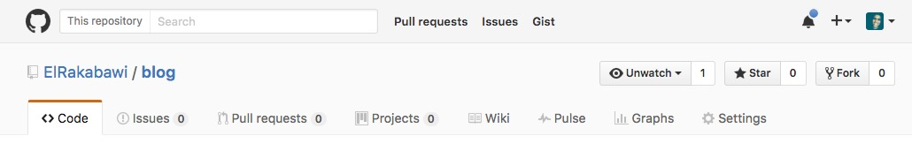
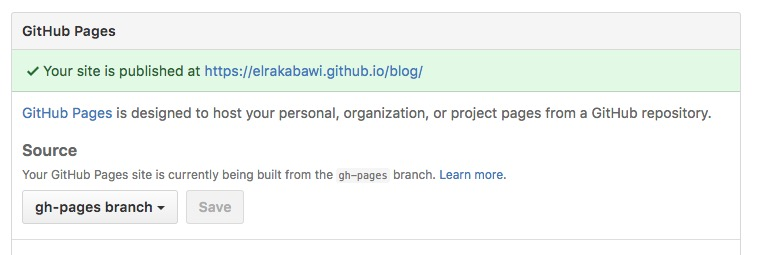

Installing Ghost on Github with buster (Mac OS X)
Bye-Bye Jekyll, Ghost is here!
Hello folks!
I bet every blogger knows what's Ghost, and if not .. luckily it's not too late.
So, Ghost is an open source blogging platform that focuses on blogging itself, what's with github!
Anyone knows that Github pages offers you to host your projects websites on it (through turning your pretty repository into a working website). But as good as it sounds it comes with limitations, it just hosts static websites. It means that you can't host blogs or any websites having a back-end working part, just code a static website and push it to live internet, for any modification design it then re-push .. etc!
The ordinary solution offered by Github: Jekyll
Developers can't live without two things (besides oxygen and nutrients) coding and blogging. Github offered us a great service called Jekyll, it's a static blog-aware service means you can host a static jekyll blog on github easily, just add a post through your favourite editor and jekyll will transform it to a static files ready to be published .. neat, right?
Wrong! It was wrong from the beginning .. it's complicated, slow and ugly looking, specially if you want your blog to look nice!
The pretty solution: Ghostbusting!

Thanks to the great persons behind buster, it's a brute force static site generator for ghost, It goes like this.
- Create your ghost.
- Edit it locally (including posts publishing)
- Ghostbust your ghost using buster (transform it into a static github friendly website)
- push and browse it live!
Now, you have the bonus of using a really great blogging platform like Ghost and hosting it freely on your beautiful Github pages. (like this one you're opening, proudly a github hosted ghost)
Enough talk, to work! Now, create a new directory, fire up your beautiful terminal and be ready.
1. Install XCode
First of all, to avoid tons of frustration and hard-to-follow errors during this process, make sure to have XCode installed on your mac, you can download it freely from AppStore.
After installing it, check whether Command Line Tools is installed correctly or not by typing in your terminal:
x-code select --install
.
2. Install dependencies
First you need to install some dependencies beside Node.js.
It will start with Curl by typing this command in your pretty terminal:
ruby -e "$(curl -fsSL https://raw.githubusercontent.com/Homebrew/install/master/install)"
Then install pip and wget :
easy_install pip
wget through our beloved homebrew:
brew install wget
And here it comes the core, Node.JS and npm:
brew install node
Now we've all our dependencies around, we just needs to install buster to start busting ghosts!
pip install buster
.
3. Download and install ghost
Now, you need to download ghost, unzip it into a folder then install it.
Download your ghost here: https://ghost.org/developers/
After unzipping it, cd into it and install it using this command:
npm install
Then give it a try and test it using:
npm start
Then your ghost blog will be streamed through localhost, you can access it through: http://localhost:2368 and http://localhost:2368/ghost for admin.
4. Create your github repository
Now navigate to your github account, create a new repository and customize it to be a github-pages repository by the following steps:
- Go to your repository
- Click settings in upper-left

- Now navigate to Github Pages
- Select gh-pages branch as follows

Neat, hah?
5. Blog and Bust
Everything is ready, just another more step to let it then to the routine.
Now, create a new folder besides your ghost folder.
Structure may be something like that.
- Blog
- Ghost --> where your ghost lies
- Busted --> where your static files lies after busted
cd to your static folder, then setup buster by:buster setup
P.S you will enter your repository.
6. Bust and Push to the cloud
Now, after launching your ghost live, editing it and creating some initial posts it's time to bust it(Build it as a static files).
cd to your static folder and type:
buster generate --domain=http://127.0.0.1:port
like buster generate --domain=http://127.0.0.1:2368
In other older versions of Ghost the port is 2369.
VERY IMPORTANT! Do above procedure while ghost is still running live at localhost otherwise buster will not find ghost.
So, it's time to publish.
While you're in the static folder (named here: busted) type the following commands:
git init
git add .
git commit -m "Description(any text)"
git remote add origin your-repository-url
git push
7. Workflow and Routine
You should expect a routine like that going:
- Start your ghost npm start
- Browse http://localhost:2368/ghost
- Blog
- Go to your static folder
- Bust through buster generate --domain=http://127.0.0.1:2368
- Push to github through these commands:
git add .
git commit -m 'Initial commit'
git push
Voila! It's now up and working.
Finally, make sure to contact me if you encounter any problem.